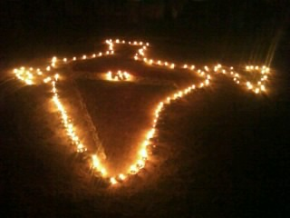

NSS Gallery
About NSS GOVT POLYTECHNIC SORABA

PREFACE:
The National Service Scheme(NSS) is on the threshold of its three and half decade. It was launched in 1969 with aim of Education through service. It has been able to establish close rapport between campus and community in the course of its developmental activities more importantly it has beneficent effect on attitude. It also has beneficent effect on attitudinal change in the youth. It has substantially lived up to the expectations through a variety of need based programs with themes like “Youth Against Famine youth for development; Youth for Economic Development; Youth Water Shed Management and Sustainable Development. Give the opportunity, and youth can be vigorous agents of social change they can safeguard the basic human values as they are free from prejudices that bend attitudes. They can offer economic front and alternative delivery system for plans and schemes for upliftment of the rural areas. In our College NSS Unit is started during first January 2000, with the strength of 100 volunteers.
OBJECTIVES:
The focal objectives of the Scheme is the overall development of personality of students by providing them with opportunity to participate in the community development service programs, and enable them to acquire experience by exposure to the life outside educational institutions. The scheme also helps the NSS volunteers in direct contact with the community problems, need-based programs like Total literacy campaigns, health and Sanitation, Environment Awareness and Enrichment programs, Gender Equity, Self Employment, Income Generation Program. The Motto of NSS: The motto or watch word of the national service scheme is “NOT ME BUT YOU This expresses the essence of democratic living and upholds the need for selfless service and consideration for fellow human beings.
PREFACE:
The National Service Scheme(NSS) is on the threshold of its three and half decade. It was launched in 1969 with aim of Education through service. It has been able to establish close rapport between campus and community in the course of its developmental activities more importantly it has beneficent effect on attitude. It also has beneficent effect on attitudinal change in the youth. It has substantially lived up to the expectations through a variety of need based programs with themes like “Youth Against Famine youth for development; Youth for Economic Development; Youth Water Shed Management and Sustainable Development. Give the opportunity, and youth can be vigorous agents of social change they can safeguard the basic human values as they are free from prejudices that bend attitudes. They can offer economic front and alternative delivery system for plans and schemes for upliftment of the rural areas. In our College NSS Unit is started during first January 2000, with the strength of 100 volunteers.
OBJECTIVES:
The focal objectives of the Scheme is the overall development of personality of students by providing them with opportunity to participate in the community development service programs, and enable them to acquire experience by exposure to the life outside educational institutions. The scheme also helps the NSS volunteers in direct contact with the community problems, need-based programs like Total literacy campaigns, health and Sanitation, Environment Awareness and Enrichment programs, Gender Equity, Self Employment, Income Generation Program. The Motto of NSS: The motto or watch word of the national service scheme is “NOT ME BUT YOU This expresses the essence of democratic living and upholds the need for selfless service and consideration for fellow human beings.